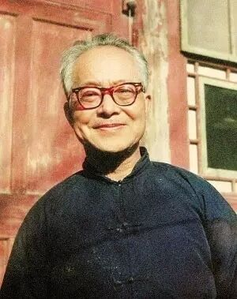
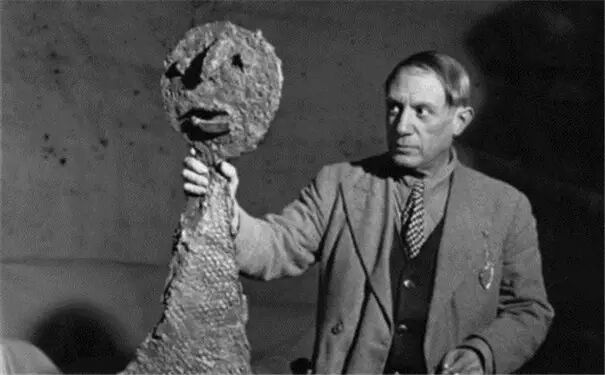

名家笔下的名师
 440
440
陈寅恪
季羡林回忆陈寅恪
要论我同寅恪先生的关系，应该从六十五年前的清华大学算起。我于一九三○年考入国立清华大学，入西洋文学系（不知道从什么时候起改名为外国语文系）。西洋文学系有一套完整的教学计划，必修课规定得有条有理，完完整整；但是给选修课留下的时间是很富裕的。除了选修课以外，还可以旁听或者偷听。教师不以为忤，学生各得其乐。我曾旁听过朱自清、俞平伯、郑振铎等先生的课，都安然无恙，而且因此同郑振铎先生建立了终生的友谊。但也并不是一切都一帆风顺。我同一群学生去旁听冰心先生的课。她当时极年轻，而名满天下。我们是慕名而去的。冰心先生满脸庄严，不苟言笑。看到课堂上挤满了这样多学生，知道其中有”诈”，于是威仪俨然地下了”逐客令”：”凡非选修此课者，下一堂不许再来！”我们悚然而听，憬然而退，从此不敢再进她讲课的教室。四十多年以后，我同冰心重逢，她已经变成了一个慈祥和蔼的老人，由怒目金刚一变而为慈眉菩萨。我向她谈起她当年”逐客”的事情，她已经完全忘记，我们相视而笑，有会于心。
就在这个时候，我旁听了寅恪先生的”佛经翻译文学”。参考书用的是《六祖坛经》，我曾到城里一个大庙里去买过此书。寅恪师讲课，同他写文章一样，先把必要的材料写在黑板上，然后再根据材料进行解释，考证，分析，综合，对地名和人名更是特别注意。他的分析细入毫发，如剥蕉叶，愈剥愈细愈剥愈深，然而一本实事求是的精神，不武断，不夸大，不歪曲，不断章取义。他仿佛引导我们走在山阴道上，盘旋曲折，山重水复，柳暗花明，最终豁然开朗，把我们引上阳关大道。读他的文章，听他的课，简直是一种享受，无法比拟的享受。在中外众多学者中，能给我这种享受的，国外只有海因里希·吕德斯，在国内只有陈师一人。他被海内外学人公推为考证大师，是完全应该的。这种学风，同后来滋害流毒的”以论代史”的学风，相差不可以道里计。然而，茫茫士林，难得解人，一些鼓其如簧之舌惑学人的所谓”学者”，骄纵跋扈，不禁令人浩叹矣。寅恪师这种学风，影响了我的一生。后来到德国，读了吕德斯教授的书，并且受到了他的嫡传弟子瓦尔德施米特教授的教导和薰陶，可谓三生有幸，可惜自己的学殖瘠薄，又限于天赋，虽还不能论无所收获，然而犹如细流比沧海，空怀仰止之心，徒增效颦之恨。这只怪我自己，怪不得别人。
总之，我在清华四年，读完了西洋文学系所有的必修课程，得到了个学士头衔。现在回想起来，说一句不客气的话：我从这些课程中收获不大。欧洲著名的作家，什么莎士比亚、歌德、塞万提斯、莫里哀、但丁等等的著作都读过，连现在忽然时髦起来的《尤利西斯》和《追忆似水年华》等等也都读过。然而大都是浮光掠影，并不深入。给我留下深远影响的课反而是一门旁听课和一门选修课。前者就是在上面谈到的寅恪师的”佛经翻译文学”；后者是朱光潜先生的”文艺心理学”，也就是美学。关于后者，我在别的地方已经谈过，这里就不再赘述了。
在清华时，除了上课以外，同陈师的接触并不太多。我没到他家去过一次。有时候，在校内林荫道上，在熙往攘来的学生之流中，会见到陈师去上课。身着长袍，朴素无华，肘下夹着一个布包，里面装满了讲课时用的书籍和资料。不认识他的人，恐怕大都把他看成是琉璃厂某一个书店的到清华来送书的老板，绝不会知道，他就是名扬海内外的大学者。他同当时清华留洋归来的大多数西装革履、发光鉴人的教授，迥乎不同。在这一方面，他也给我留下了毕生难忘的印象，令我受益无穷。
节选自《真话能走多远》

沈从文
汪曾祺回忆沈从文
沈先生在联大开过三门课：各体文习作、创作实习和中国小说史。三门课我都选了，——各体文习作是中文系二年级必修课，其余两门是选修。西南联大的课程分必修与选修两种。中文系的语言学概论、文字学概论、文学史(分段)……是必修课，其余大都是任凭学生自选。诗经、楚辞、庄子、昭明文选、唐诗、宋诗、词选、散曲、杂剧与传奇……选什么，选哪位教授的课都成。但要凑够一定的学分(这叫“学分制”)。一学期我只选两门课，那不行。自由，也不能自由到这种地步。
创作能不能教？这是一个世界性的争论问题。很多人认为创作不能教。我们当时的系主任罗常培先生就说过：大学是不培养作家的，作家是社会培养的。这话有道理。沈先生自己就没有上过什么大学。他教的学生后来成为作家的，也极少。但是也不是绝对不能教。沈先生的学生现在能算是作家的，也还有那么几个。问题是由什么样的人来教，用什么方法教。现在的大学里很少开创作课的，原因是找不到合适的人来教。偶尔有大学开这门课的，收效甚微，原因是教得不甚得法。
教创作靠“讲”不成。如果在课堂上讲鲁迅先生所讥笑的“小说作法”之类，讲如何作人物肖像，如何描写环境，如何结构，结构有几种——攒珠式的、橘瓣式的……那是要误人子弟的，教创作主要是让学生自己“写”。沈先生把他的课叫做“习作”、“实习”，很能说明问题。如果要讲，那“讲”要在“写”之后。就学生的作业，讲他的得失。教授先讲一套，让学生照猫画虎，那是行不通的。
沈先生是不赞成命题作文的，学生想写什么就写什么。但有时在课堂上也出两个题目。沈先生出的题目都非常具体。我记得他曾给我的上一班同学出过一个题目：“我们的小庭院有什么”，有几个同学就这个题目写了相当不错的散文，都发表了。他给比我低一班的同学曾出过一个题目：“记一间屋子里的空气”！我的那一班出过些什么题目，我倒不记得了。沈先生为什么出这样的题目？他认为：先得学会车零件，然后才能学组装。我觉得先做一些这样的片段的习作，是有好处的，这可以锻炼基本功。现在有些青年文学爱好者，往往一上来就写大作品，篇幅很长，而功力不够，原因就在零件车得少了。
沈先生的讲课，可以说是毫无系统。前已说过，他大都是看了学生的作业，就这些作业讲一些问题。他是经过一番思考的，但并不去翻阅很多参考书。沈先生读很多书，但从不引经据典，他总是凭自己的直觉说话，从来不说亚里斯多德怎么说、福楼拜怎么说、托尔斯泰怎么说、高尔基怎么说。他的湘西口音很重，声音又低，有些学生听了一堂课，往往觉得不知道听了一些什么。沈先生的讲课是非常谦抑，非常自制的。他不用手势，没有任何舞台道白式的腔调，没有一点哗众取宠的江湖气。他讲得很诚恳，甚至很天真。但是你要是真正听“懂”了他的话，——听“懂”了他的话里并未发挥罄尽的余意，你是会受益匪浅，而且会终生受用的。听沈先生的课，要像孔子的学生听孔子讲话一样：“举一隅而三隅反”。
沈先生讲课时所说的话我几乎全都忘了(我这人从来不记笔记)！我们有一个同学把闻一多先生讲唐诗课的笔记记得极详细，现已整理出版，书名就叫《闻一多论唐诗》，很有学术价值，就是不知道他把闻先生讲唐诗时的“神气”记下来了没有。我如果把沈先生讲课时的精辟见解记下来，也可以成为一本《沈从文论创作》。可惜我不是这样的有心人。
沈先生关于我的习作讲过的话我只记得一点了，是关于人物对话的。我写了一篇小说(内容早已忘记干净)，有许多对话。我竭力把对话写得美一点，有诗意，有哲理。沈先生说：“你这不是对话，是两个聪明脑壳打架！”从此我知道对话就是人物所说的普普通通的话，要尽量写得朴素。不要哲理，不要诗意。这样才真实。
沈先生经常说的一句话是：“要贴到人物来写。”很多同学不懂他的这句话是什么意思。我以为这是小说学的精髓。据我的理解，沈先生这句极其简略的话包含这样几层意思：小说里，人物是主要的，主导的；其余部分都是派生的，次要的。环境描写、作者的主观抒情、议论，都只能附着于人物，不能和人物游离，作者要和人物同呼吸、共哀乐。作者的心要随时紧贴着人物。什么时候作者的心“贴”不住人物，笔下就会浮、泛、飘、滑，花里胡哨，故弄玄虚，失去了诚意。而且，作者的叙述语言要和人物相协调。写农民，叙述语言要接近农民；写市民，叙述语言要近似市民。小说要避免“学生腔”。
我以为沈先生这些话是浸透了淳朴的现实主义精神的。
节选自《沈从文先生在西南联大》
木心
陈丹青回忆木心
1982年秋，我在纽约认识了木心，第二年即与他密集过往，剧谈痛聊：文学课里的许多意思，他那时就频频说起。我原本无学，直听得不知如何是好。我不愿独享着这份奇缘，未久，便陆续带着我所认识的艺术家，走去见木心——八十年代，纽约地面的大陆同行极有限，各人的茫然寂寞，自不待说——当然，很快，众皆惊异，不知如何是好了。
自1983到1989年，也是木心恢复写作、持续出书的时期。大家与他相熟后，手里都有木心的书。逢年过节，或借个什么由头，我们通宵达旦听他聊，或三五人，或七八人，窗外晨光熹微，座中有昏沉睡去的，有勉力强撑的，唯年事最高的木心，精神矍铄。
木心在大陆时，与体制内晚生几无来往，稍事交接后，他曾惊讶地说：“原来你们什么都不知道啊！”这样子，过了几年，终于有章学林、李全武二位，纠缠木心，请他正式开课讲文艺，勿使珍贵的识见虚掷了。此外，众人另有心意：那些年木心尚未售画，生活全赖稿费，大家是想借了听课而交付若干费用，或使老人约略多点收益。“这样子算什么呢？”木心在电话里对我说，但他终于同意，并认真准备起来。
劝请最力而全程操办的热心人，是李全武。他和木心长期协调讲课事项，转达师生间的种种信息，改期、复课、每课转往谁家，悉数由他逐一通知，持续听课或临时听课者的交费，也是他负责收取，转至木心，五年间，我们都称他“校长”。
事情的详细，不很记得了。总之，1989年元月15日，众人假四川画家高小华家聚会，算是课程的启动。那天满室哗然，很久才静下来。木心，浅色西装，笑盈盈坐在靠墙的沙发，那年他六十二岁，鬓发尚未斑白，显得很年青——讲课的方式商定如下：地点，每位听课人轮流提供自家客厅；时间，寒暑期各人忙，春秋上课；课时，每次讲四小时，每课间隔两周，若因事告假者达三五人，即延后、改期，一二人缺席，照常上课。
开课后，渐渐发现或一专题，一下午讲不完。单是圣经就去两个月，共讲四课。上古中古文学史讲毕，已逾一年，越近现代，则内容越多。原计划讲到十九世纪收束，应我们叫唤，木心遂添讲二十世纪流派纷繁的文学，其中，仅存在主义便讲了五课。
那些年，众生多少是在异国谋饭的生熟尴尬中，不免分身于杂事，课程改期，不在少数，既经延宕，则跨寒暑而就春秋，忽忽经年，此即“文学远征”至于跋涉五年之久的缘故吧。到了最后一两年，这奇怪的小团体已然彼此混得太熟，每次相聚有如小小的派对，不免多了课外的闲聊，我的所记，则仍是木心的讲课。
节选自《文学回忆录》
胡兰成
朱天衣回忆胡兰成
他在70岁的时候，不是像我们想像的一样风流倜傥，他就像一个学生一样，非常有风度，而且生活非常节俭，自律，像是一个修道人。他最大的优点是能看到年轻女孩子好的一点，当年我还是13岁，还是个国中的女孩子，我就记得他对我说“天衣眉宇之间很特别……”。就是在日常生活中，他就能看到你的好，不是容貌而已，而是你的内涵，你的个性。他会让你觉得，在他面前，你会是一个发光体，就是你会被欣赏，不是说被爱，是会被喜欢被欣赏，这完全不涉及什么男女之情，他就是把你当作一朵好美好美的花去欣赏。
我觉得胡爷如果是一个很油滑的人，一个懂得手腕的人的话，他根本不会和张爱玲说另一个女朋友小周，拍拍屁股始乱终弃就好了。我觉得《今生今世》是一个自传，是一个自曝其短的自传，而并非是炫耀。可能每个人的看法不同，我曾经是和他共过一年的生活，所以我觉得他完全不是外面所讲的那个人。他就是一个读书人，满脑子就是学问，就是读书，怎么希望中国的文学崛起。
节选自朱天衣访谈

舍伍德·安德森
福克纳回忆舍伍德·安德森
那是在新奥尔良，有好几个月，我们总是边走边聊，不然就是安德森聊，我听。有一天，我发现他坐在杰克逊广场的一张长凳上，独自发笑。我的印象是他这样已经有好一阵了，一个人坐在长凳上暗自发笑。这不是我们经常碰头的地方。我们根本没有这样的地方。他住在广场北边，我们事先并没有特别约好，我中午吃过一些东西之后，知道他准也吃完午饭了，我就朝广场的方向走去，如果没有见到他已经在散步或是坐在广场某处，我就干脆在能看见他家门口的街沿石上坐下来，一直等到他穿着那身鲜艳的、一半像赛马骑手一半像穷艺术家穿的衣服，从家里走出来。
这一次他已经坐在长凳上暗自笑开了。他立刻告诉我昨天晚上他做了一个梦，梦见自己牵了一匹马在乡间路上走了许多里路，他想用这匹马换来一个夜晚的睡眠——并不是只换能睡一个夜晚的一张床，而是睡眠本身；现在有我在听，他就从这里编开了，添枝又加叶，把它编成一件艺术品。我在听可是连一个字都不相信，因为我知道那是他凭空想出来的，大部分或至少有一些是我在那儿看着他听着他的时候现编的。他不知道为什么自己非得要说，为什么非得把梦和睡眠扯上关系不可，但是我知道。这是因为他已经把他的整个一生都写成了一件轶事或者一个寓言：那匹马（起先是匹赛马，可是现在又变成了一匹干活的马，有犁，有车，有鞍，身强力壮，却缺少有文字记录的家谱）代表着那片广袤、富饶、强有力而又柔顺的密西西比河谷，代表着他自己的美国，而穿着扎眼的蓝色赛马衬衫、打着有朱红斑点的温莎领巾的他，正在以幽默、耐心和谦恭的姿态，以此来换得他自己实现那个写出纯粹、完美、坚实、源源不绝的作品与成就的梦想，而他的《俄亥俄州的瓦恩斯堡镇》和《鸡蛋的胜利》正是这样的征兆和象征。……事实上，正不正确，他信还是不信，这都关系不大。他肯定会加以否认，其出发点恰好是他性格中的大悲剧。他希望别人取笑他，嘲弄他。他希望在地位、成就、机智以及别的任何方面都无法与他比肩的人能使他显得愚蠢可笑。
这就是为什么他所写的每一篇东西他都如此孜孜矻矻、不厌其烦和不知疲倦地下功夫的原因。这好像是他在对自己说：“这至少是、将是、必定是无懈可击的。”仿佛他写作甚至都不是出于那种耗费精力、永不休止、难以餍足的对荣誉的渴望（为了这样的荣誉，任何一个正常的艺术家都不惜消灭自己年迈的母亲），而是为了对他来说是更加重要更加迫切的东西：甚至还不是为了不值一提的真理，而是为了完美，为了无与伦比的完美。他没有麦尔维尔的力度与冲劲，麦尔维尔是他的祖父；也没有马克·吐温对生活的旺盛的幽默感，马克·吐温是他的父亲；他也没有他的兄长德莱塞对种种细微差别的粗暴的蔑视。他的特点是追求精确，在有限的词汇范围之内力图选用最恰当的词句，他内心对简朴有一种近乎盲目的崇拜，他要把词与句都像挤牛奶一样挤得干干净净，总是力图要穿透到思想的最深的核心里去。他在这上面费了那么大的力气，到最后他的作品里剩下的只有风格了——风格成了一种目的而不是手段。接下去他很快又相信，只要他竭力使这种风格纯粹、不走样、不变化与不受污染，它所包含的内涵就必定是第一流的——无法不是第一流的，他自己因而也必定是第一流的。
节选自《福克纳随笔》，李文俊译
来源：楚尘文化